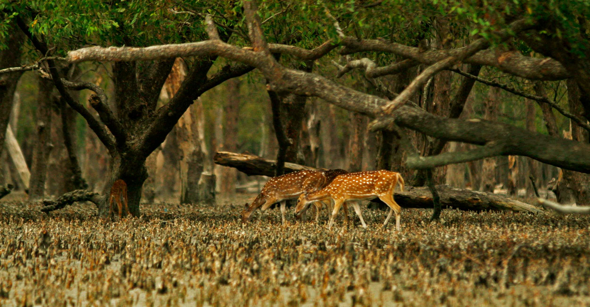
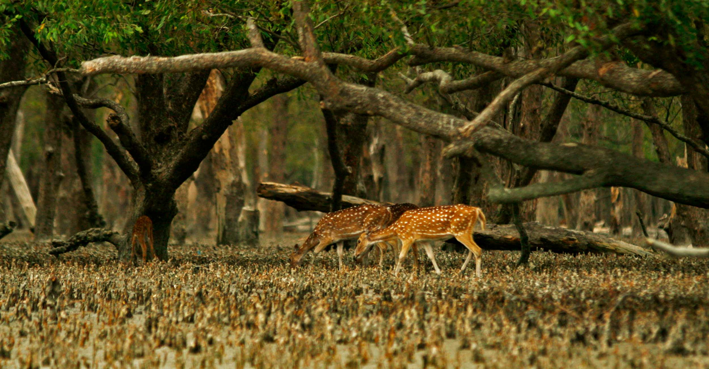

Introducing Bangladesh
 

Places To Visit
Explore Bangladesh
Land of Rivers
Welcome to river country. Bangladesh is braided together by more than 700 rivers, producing a deliciously lush landscape with more shades of green than you ever imagined. Travelling by boat is a way of life here, and provides a fabulous opportunity to see the country from a more unusual angle. This is one of the world’s most densely populated countries, but once you’re slowly floating downriver on a small wooden rowboat
Hidden Riches
The mangrove forests and tigers of the Sundarbans National Park are Bangladesh's most famous attraction, but the country has a host of lesser-known attractions that are waiting to be discovered. Highlights include the Buddhist remains at Paharpur and the 15th-century mosques and mausoleums of Bagerhat, both of which are Unesco World Heritage Sites. While modern Bangladesh is majority Muslim, its hill tracts are still home to Buddhist and Christian Adivasi tribal peoples, while temples in Dhaka and beyond attest to the influence of Hindu culture on the country.
Warm & Welcoming
Getting off the beaten track is something of a travel cliché these days, but Bangladesh is somewhere that tourism remains in its infancy. It's easy to get the sensation that you're breaking ground here, even if your pioneering spirit is frequently attended to by being the centre of attention. Bangla culture is famously welcoming – rarely will you have cause to suspect the ulterior motives that can sometimes bedevil travel in other parts of south Asia. If you enjoy making friends, mixing with locals and travelling without bumping into too many other tourists, then this is probably just the country to explore.
Slow Down
Be prepared to embrace Bangladesh in all its possibilities and quirks.